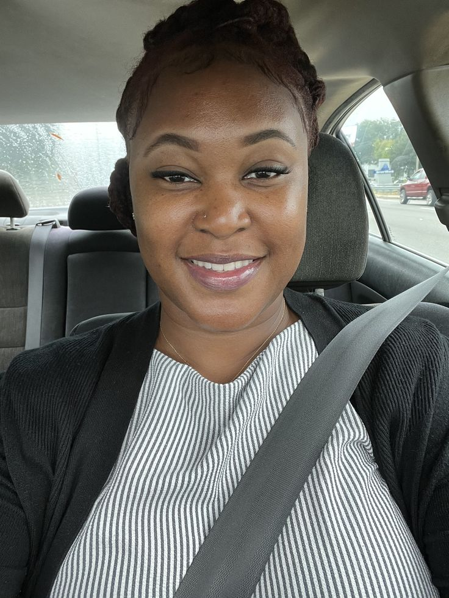

About Us
Domestic Animal Rescue Group (DARG) is a high-quality, non-profit organisation that rescues, cares for, sterilises and rehomes previously abused, neglected and abandoned cats and dogs. DARG provides a crucial service for lower-income communities in Imizamo Yethu, Hangberg and the greater Hout Bay area.
We Give Cats and Dogs a Second Chance!
Situated on a large plot in Hout Bay, Western Cape, DARG provides shelter for rescued animals through housing, an extensive cat garden, a cat sanctuary, outdoor and indoor kennel areas, as well as indoor rooms for animals receiving treatment or rehabilitation. DARG relies on the generosity and support of donations.
Our Mission
Our mission is to care for animals in need and find them loving homes. We rescue, sterilise, rehome and care for previously abused, neglected and abandoned cats and dogs. We work to give animals a safe and happy life.
Our Vision
For all adoptable animals at DARG to find a loving home and to ensure the well-being of all companion animals.
Meet Our Team

Emily Brown
Animal Care Manager
Michael Williams
Animal Care Worker
Sarah Smith
Animal Care Worker
Vanessa Johnson
Adoption Coordinator
Jessica Adams
Volunteer Coordinator